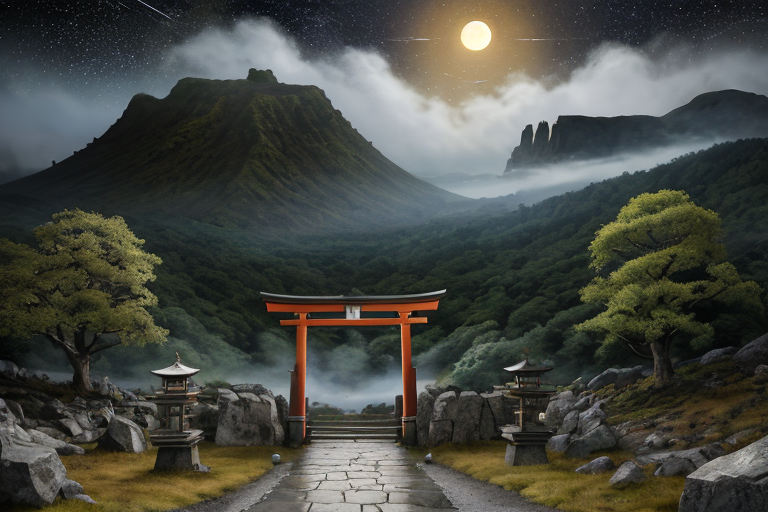
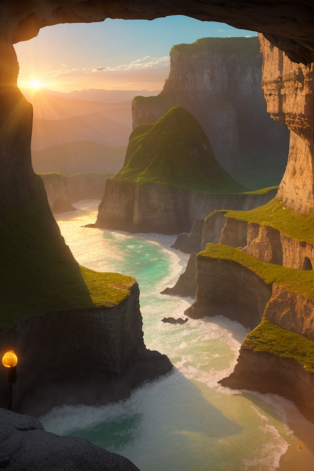
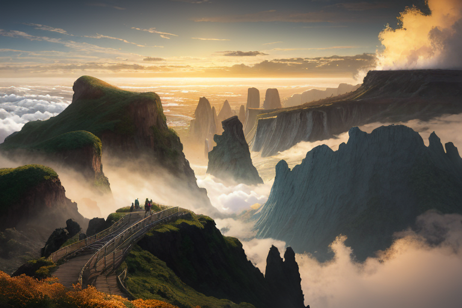
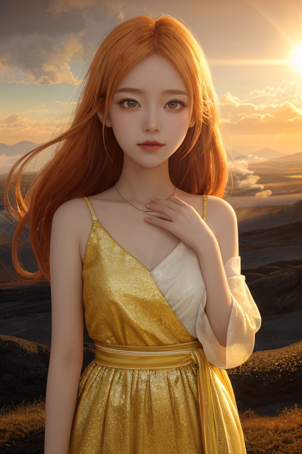
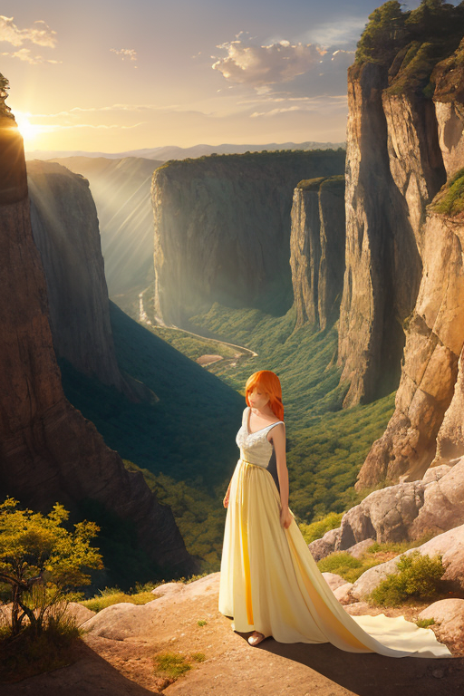

第一章 現実の宮崎
あなたはまだ気づいていない。この土地にも、王がいることを。
高千穂峡の柱状節理は、冷たい闇を湛えていた。真名井の滝が轟音を立てて落ちるその下で、観光客の誰もが神話の息吹を感じるという。天孫降臨の地。だが、地質学者は違う言葉で説明する。火山活動と冷却、そして長い歳月による侵食が生んだ、自然の造形である、と。神話と地質学。どちらもこの土地の現実だ。夜、神楽が舞われる広場では、太鼓の音が地を揺らす。それは祈りでもあり、歪みの列島に生きる者たちの、地鳴りへの畏れでもあった。
その夜、えびの高原の地下で、プレートがほんの少し、予定よりも強く噛み合った。データは警告を発する。次の歪みの解放は、間近であることを。

第二章 歪みの兆候
データの警告は、都井岬の断崖に立つヒュウガリア・ソルの意識に、鋭い光の如く届いた。岬の先、水平線が朝日に染まり始める瞬間だった。彼はその光を直視した。光の中に、歪みの列島の地下を流れる巨大な力の、乱れた波紋が見える。今回は、単なる地殻のひずみではない。神話の時代から連なる、この地の「記憶」の層が、現代のプレートの動きに共振しようとしている。天孫降臨の伝承が語る、神々の国づくりの衝撃が、千年の時を超えて微かに響く。
彼の傍らで、妖精ソリアが光を煌めかせた。「王、感情密度が上昇しています。人々の不安が、地鳴りへの畏れが、歪みを増幅させかねません」
「希望で中和する」王は答えた。声は明るいが、その瞳には、増大する負荷への認識が光っていた。彼は手を挙げた。掌から放たれた微かな光の波が、高千穂峡の深い谷間へ、青島神社の潮騒の中へ、鵜戸神宮の洞窟へと拡散してゆく。歪みそのものを消すことはできない。しかし、神話の記憶の共振を0.1秒遅らせ、プレートの摩擦が生む熱を一度分だけ冷ます調整は、可能だった。
次の歪みは、単なる自然現象ではない。歴史そのものが、今、うごめいている。

第三章 王の葛藤
えびの高原の硫黄の匂いが、風に乗って漂っていた。ヒュウガリア・ソルは、足元の噴気孔から立ち上る白い蒸気を見つめていた。地中深く、歴史の断層が蠢いている。それは「天孫降臨」の神話が再解釈され、新たな国造りの波が起きようとする、人々の心の地殻変動だった。
「止めるべきか、主君」ソリアが囁いた。その声はいつになく重かった。
王は黙った。彼の役割は歪みの調整だ。この変革のうねりも、社会という地盤の歪みに他ならない。止めれば安定は保たれる。だが、それは光を背にすることだ。変革の熱は、時に災いを生む。しかし、それはまた新たな日向国の夜明けでもある。
彼は目を閉じた。都井岬の断崖に打ち寄せる波の音が、心の中で響く。光を直視するとは、その熱と影の両方を受け入れることだ。
「調整する」彼は言った。「止めず、進ませず。その波が、できるだけ多くの命を呑まないように、ほんの少し、その速度を緩めるのだ」
彼の掌から、橙と金の光が微かに拡がった。それは命令ではなく、祈りのような調整だった。

第四章 妖精との対話
えびの高原の硫黄の匂いが風に乗る。ソリアは、噴気孔から立ち上る白い蒸気の傍らに佇んでいた。彼女の体は、夕日に染まる雲のように柔らかな橙色に輝いている。
「王よ。変革は、常に熱を伴います」彼女の声は、穏やかながらも確かな力を持っていた。「あなたが調整しようとするその歪みは、この地に眠る巨大な力の目覚めです。それを完全に鎮めることは、成長を止めることに等しい」
タカチホナが現れた。その姿は、高千穂の夜神楽に舞う巫女のようだった。「神話は、繰り返される破壊と再生の物語です。天孫降臨も、古い秩序から新しい秩序への、痛みを伴う転換でした。光を直視するとは、その転換の焔に焼かれる覚悟を持つことです」
王は黙って聞いた。彼らが言うことは理解できた。だが、彼の役割は破壊者でも創造主でもない。ただの調整者だ。過ぎ去る時代の終わりを少しだけ優しくし、来るべき時代の始まりを、ほんの少しだけ穏やかにする。
「私は、光そのものにはなれない」王は言った。「ただ、その光が、誰かの目を焼き尽くさないように、影を作る者でいよう」
妖精たちは、王の決意を、優しい光の波で包んだ。

第五章 微調整と余韻
高千穂峡の渓谷に、朝日が差し込んだ。神話の舞台は、今日も変わらぬ光を湛えている。
王は、妖精たちの光波増幅を一身に受け、歪みの調整に臨んだ。彼の役割は、激変する地殻のエネルギーを、ほんのわずか、別の方向へ逸らすこと。巨大な津波の先端を、一秒だけ遅らせること。それだけが、沿岸の村を、ほんの数家族分だけ救うかもしれない。
「これが、代償です」ソリアの声が震えた。最大の調整は、王自身の存在を光に還すことを意味した。
王は笑った。感情を持たぬはずの彼が、なぜか誇らしかった。光を直視するとは、自らが光となる覚悟を持つこと。彼は、自らの全てを、微調整のための「影」として差し出した。
次の瞬間、宮崎の空は、いつもよりほんの少しだけ柔らかな金色に染まった。誰も気付かない、歴史のほんの一ページが、優しくめくられた。
あなたの町にも、王がいる。